Click to switch the active brush.
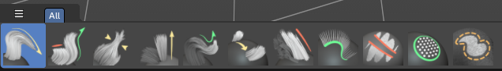
Click to switch the active brush.
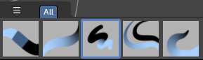
Click to switch the active brush.
The Grease Pencil sculpt brushes are divided into categories. Click to switch the active brush.
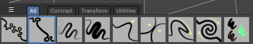
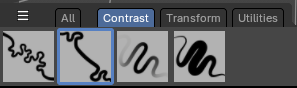
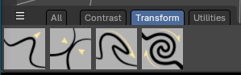
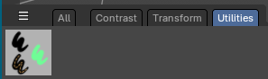
The Grease Pencil draw brushes are divided into categories. Click to switch the active brush.
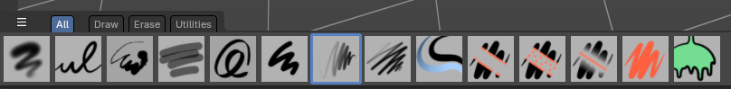
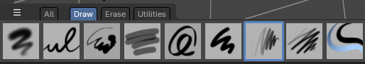
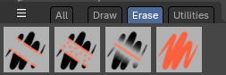
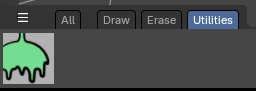
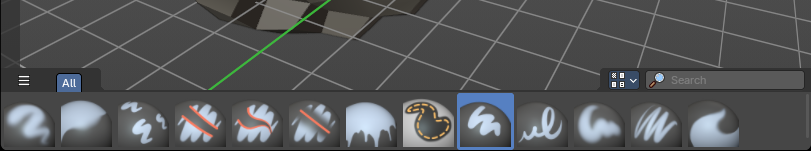
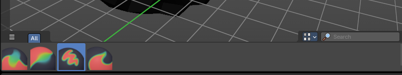
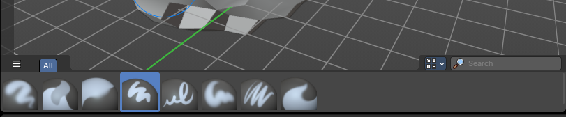
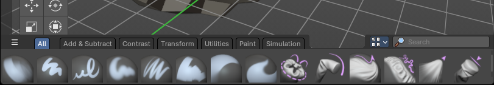
When in the Mesh Sculpt mode of the 3D View, the Asset Shelf exposes brush assets.
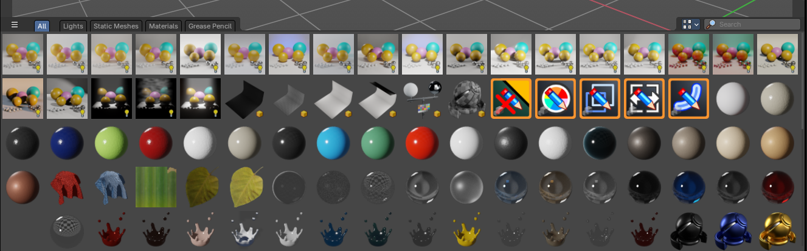
The Object mode asset shelf exposes your Asset Browser library assets directly in the 3D View.
Introduction
The Asset Shelf is a quick access to marked assets for the Asset Browser available in the footer of many editors.
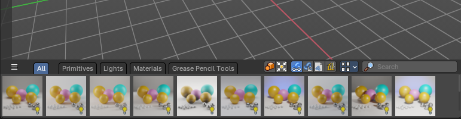
The 3D View is made of several areas, and at the bottom of the 3D View you will find the Asset Shelf.
- Blue: Catalog Selector
- Red: Catalog tabs
- Orange: Import Properties
- Green: Display Settings
- Purple: Search Filter
- Yellow: Assets List
This shelf lists Essential and user defined assets from the Asset Browser for quick and easy access to drag and drop marked assets into the 3D View - directly from the 3D view footer.
Location
The 3D Shelf is available in the following editors:
- 3D View
- Image Editor
- Node Editors: Shader, Compositor, Geometry Nodes
Catalog Selector
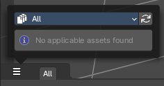
To the top left, you can pick and choose which asset library catalog will show in the header – these will help filter assets you would like to see listed in the Asset Shelf.
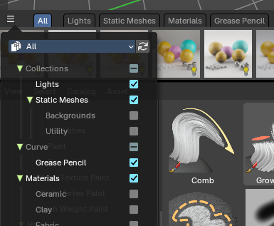
When you select a category, it will create a tab in the header.
You can alternatively filter by library and expose a selection of Catalogs per library.
Asset Library Dropdown Selector
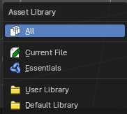
These are available asset libraries you can filter assets to the Asset Shelf.
- The All category shows all Catalogs from all asst Libraries.
- The Current File shows all Catalogs from the current Blend file.
- The Essentials shows all default Catalogs built in to Bforaritsts.
- The User Library shows all Catalogs from a user defined library.
- If you have the Default Library addon by Bforartists, this will show the Default Library Catalogs.
Refresh
Refresh the libraries.
Catalog Tabs
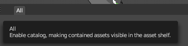
When you pick a Catalog in the Catalog Selector, these catalogs will list as tabs at the top of the Asset Shelf.
Choose a tab to filter the assets by Catalog.
Import Method
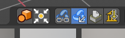
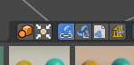
| Entry | What it does |
|---|---|
| Instance Collections on Linking | When linking or appending collections, this will instance the collection to the scene at the mouse cursor. |
| Drop Instances to Origin | When linking or appending collections as instances, this will position the new instance to the world center origin. |
| Link | Import the assets as linked data. This will link data from the asset library to the current scene and file. |
| Append | Import the assets as copied data, with no link to the original asset data This will append data to the current scene and file. |
Append (Reuse Data)
Import the assets as copied data while avoiding multiple copies of nested, typically heavy data. For example the textures of a material asset, or the mesh of an object asset, don't have to be copied every time this asset is imported. The instances of the asset share the data instead.
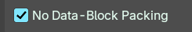
Recommending using Pack instead
You can go in the Preferences, in Developers Tools tab and enable No Packing to show Append (Reuse) back
Pack
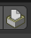
Import the asset as packed. Make it is unchanged modified, linked with the original data.
Link (Override)
Import the assets as linked library overrided data. This will only override the active hierarchy. The active hierarchy is defined by the last selected object of a collection or the armature.
To override all selected contents, use the Outliner Editor by right clicking on the asset and Overriding Selected and Content.
Display Settings
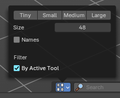
To the right you can find the display settings.
| Entry | What it does |
|---|---|
| Quick Sizes | Some quick presets between Tiny 48, small 96, Medium 128 and Large 256px thumbnails |
| Size | Changes the size of the asset thumbnails with a slider. |
| Names | Toggles the asset names. |
| By Active Tool | Note: Only available in the Brush Asset Shelf in draw and paint modes. This toggles a filter that will show only brushes set by the active brush mode set in the Toolshelf to the left. For example, it will only show Paint draw mode brushes but not Erasers at the same time. Note: If you want to see all types of brushes regardless of the mode, turn this off. |
Search Filter
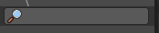
Search and filters the assets by name.
Use
When in the Object mode, you can drag and drop collections, mesh objects, materials, geometry nodes and world shaders to the 3D View to link or append the assets.
Select an asset, press and drag into the 3D View to place into the scene.
Asset Types
Collections
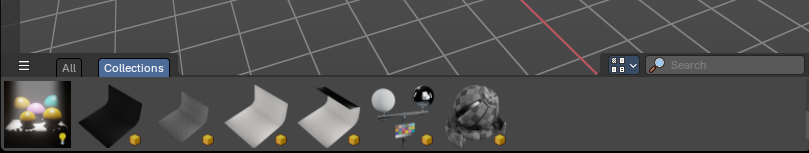
Marked collections as assets will show here. Drag and drop will default to linking the collection to scene as an instance.
Mesh Objects
Marked mesh objects as assets will show here. Drag and drop will default to appending the collection to scene.
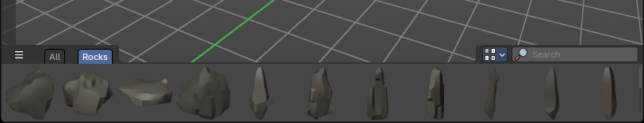
Materials
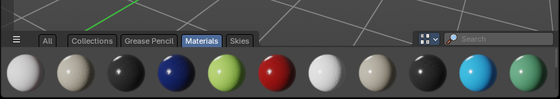
Marked materials as assets will also show here. Drag and drop will default to append to scene.
Geometry Nodes
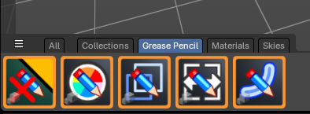
Geometry Nodes with the tag “Geometry Nodes” and “3D View” in the Tags panel of the left sidebar of the Asset Browser will show here.
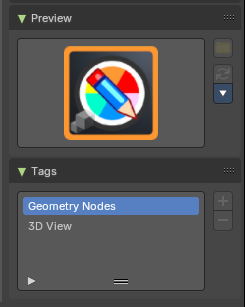
Drag and drop will default to append to scene.
Note: To mark a Geometry Nodes asset to show in the 3D Asset Shelf, go to the Asset Browser editor, and in the sidebar under the Tags panel, add “Geometry Nodes” and “3D View”
Worlds
World shaders marked as assets will show here. Drag and drop will default to append to scene.
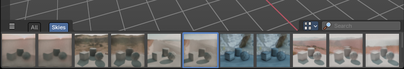
Use
Select a brush to change the brush settings to the saved brush asset. Select a brush category
Asset Type
Sculpt mode brushes.
Use
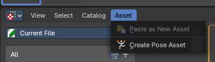
- In the 3D View, select your Armature object and go into Pose Mode
- Select the bones you want to store as a pose
- In the Asset Browser Header Asset menu, use the operator Create Pose Asset
- This will create a Pose Asset in the Unassigned (Catalogue) category in the Current File.
- Click on the new Pose Asset in the Asset Shelf or Asset Browser to apply. Press and drag to apply with a slider strength.
- You can alternatively right click on the Pose Asset for alternative methods of applying the pose.
<!-- -->
Pose Asset Context Menu
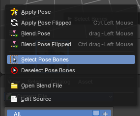
When you right click into the a pose asset then an Asset context menu opens. For more information, please refer to the Editors – Asset Browser chapter
Apply Pose
Apply the Pose asset to the selected bones.
Apply Pose Flipped
Apply the flipped Pose asset to the selected bones.
Blend Pose
Blends the selected bones with the Pose asset.
Blend Pose Flipped
Blends the selected bones with the flipped Pose asset.
Select Pose Bones
Selects the pose bones stored in the Pose asset
Deselect Pose Bones
Deselects the pose bones stored in the Pose asset
Shader Editor
Drag the nodes from the asset shelf into the shader editor viewport. Note that you need to have an active shader.
The Shader nodes are divided into serveral categories.
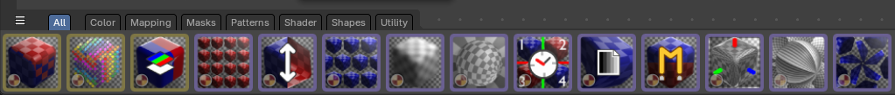
Compositor Editor
There are currently no nodes in the asset shelf in the compositor editor.
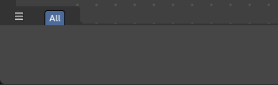
Geometry Nodes Editor
Drag the nodes from the asset shelf into the geometry nodes editor viewport. Note that you need to have an active node tree.
The geometry nodes are divided into serveral categories.
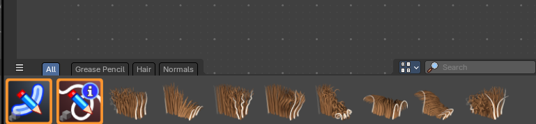
Image Editor – Paint Mode
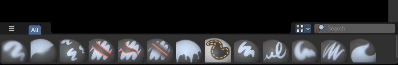
Click to switch the active brush.